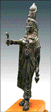
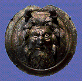
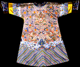

<!--This file created 10/16/97 5:52 PM by Claris Home Page version 2.0-->
<HTML>
<HEAD>
   <TITLE>Mpls Inst Arts - World Mythology: Myth by Image</TITLE>
   <META NAME="GENERATOR" CONTENT="Claris Home Page 2.0">
   <X-SAS-WINDOW TOP="42" BOTTOM="477" LEFT="4" RIGHT="534">
<HEAD>
</HEAD>
<BODY TEXT="#111111" LINK="#660000" ALINK="#AA0000" VLINK="#444444" BACKGROUND="backgroundbrown.gif">

<P><FONT SIZE="+2">Curriculum Materials: World Mythology</FONT>
<HR>
<TABLE BORDER="3">
   <TR>
      <TD>
         <P><CENTER><A HREF="introduction.html#top">Introduction</A>
         ~ <A HREF="culturelist.html#top">Myth by Culture</A> ~
         <A HREF="myths.html#top">Mythological Comparisons</A> ~
         <A HREF="glossary.html#top">Glossary</A> ~
         <A HREF="suggestedreading.html#top">Suggested Readings</A> ~
         <A HREF="downloadables.html#top">Downloadable Resources</A>
         ~ <A HREF="../tta/classroom_materials_order.html">How to Order</A> ~
         <A HREF="myth_evaluation.html#top">Your Comments Wanted</A>
         </CENTER>
      </TD></TR>
</TABLE>
<HR>
<A NAME="top"></A>&nbsp;</P>

<P><CENTER><FONT SIZE="+2">Myth by Image</FONT></CENTER></P>

<P><!-- Myth By Image Table--></P>

<P><CENTER><TABLE BORDER="3" CELLSPACING="0" CELLPADDING="3" WIDTH="445">
   <TR>
      <TD VALIGN="top" WIDTH="150">
         <P><CENTER><A HREF="slide1.html#top"><BR>
         
         <BR>
         
         <FONT SIZE="-2">Image 1<BR>
         
         Mummy Case of Lady Teshat</A></FONT><FONT SIZE="-2"><BR>
         
         Egypt<BR>
         
         1085-710 B.C.</FONT></CENTER>
      </TD><TD VALIGN="top" WIDTH="150">
         <P><CENTER><A HREF="slide2.html#top"><BR>
         
         <BR>
         
         <FONT SIZE="-2">Image 2<BR>
         
         Thoth<BR>
         
         </A></FONT><FONT SIZE="-2">Egypt<BR>
         
         664-525 B.C. (26th Dynasty)</FONT></CENTER>
      </TD><TD VALIGN="top" WIDTH="150">
         <P><CENTER><A HREF="slide3.html#top"><BR>
         
         <BR>
         
         <FONT SIZE="-2">Image 3</BR> Statuette of
         Isis</A></FONT><FONT SIZE="-2"><BR>
         
         Egypt<BR>
         
         1st century A.D.</FONT></CENTER>
      </TD></TR>
   <TR>
      <TD VALIGN="bottom" WIDTH="150">
         <P><CENTER><A HREF="slide4.html#top"><BR>
         
         <BR>
         
         <FONT SIZE="-2">Image 4<BR>
         
         Memorial Tusk</A></FONT><FONT SIZE="-2"><BR>
         
         Nigeria (Edo)<BR>
         
         Late 18th-early 19th century (Kingdom of Benin)</FONT>
         </CENTER>
      </TD><TD VALIGN="bottom" WIDTH="150">
         <P><CENTER><A HREF="slide5.html#top"><BR>
         
         <BR>
         
         <FONT SIZE="-2">Image 5<BR>
         
         King's Crown</A></FONT><FONT SIZE="-2"><BR>
         
         Nigeria (Yoruba)<BR>
         
         19th century</FONT></CENTER>
      </TD><TD VALIGN="bottom" WIDTH="150">
         <P><CENTER><A HREF="slide6.html#top"><BR>
         
         <BR>
         
         <FONT SIZE="-2">Image 6<BR>
         
         Antelope Headdress</A></FONT><FONT SIZE="-2"><BR>
         
         Mali (Bamana)<BR>
         
         20th century</FONT></CENTER>
      </TD></TR>
   <TR>
      <TD VALIGN="bottom" WIDTH="150">
         <P><CENTER><A HREF="slide7.html#top"><BR>
         
         <BR>
         
         <FONT SIZE="-2">Image 7<BR>
         
         Hydria</A></FONT><FONT SIZE="-2"><BR>
         
         Antimenes painter<BR>
         
         Greece<BR>
         
         530-500 B.C.</FONT></CENTER>
      </TD><TD VALIGN="bottom" WIDTH="150">
         <P><CENTER><A HREF="slide8.html#top"><BR>
         
         <BR>
         
         <FONT SIZE="-2">Image 8<BR>
         
         Oceanus</A></FONT><FONT SIZE="-2"><BR>
         
         Rome<BR>
         
         1st - 2nd centuries A.D. (Empire)</FONT></CENTER>
      </TD><TD VALIGN="bottom" WIDTH="150">
         <P><CENTER><A HREF="slide9.html#top"><BR>
         
         <BR>
         
         <BR>
         
         <FONT SIZE="-2">Image 9<BR>
         
         Cassone</A></FONT><FONT SIZE="-2"><BR>
         
         Italy<BR>
         
         About 1600</FONT></CENTER>
      </TD></TR>
   <TR>
      <TD VALIGN="bottom" WIDTH="150">
         <P><CENTER><A HREF="slide10.html#top"><BR>
         
         <BR>
         
         <FONT SIZE="-2">Image 10<BR>
         
         Theseus Slaying a Centaur</A></FONT><FONT SIZE="-2"><BR>
         
         About 1855<BR>
         
         Antoine-Louis Barye<BR>
         
         France, 1796-1875</FONT></CENTER>
      </TD><TD VALIGN="bottom" WIDTH="150">
         <P><CENTER><A HREF="slide11.html#top"><BR>
         
         <BR>
         
         <FONT SIZE="-2">Image 11<BR>
         
         Orpheus and Eurydice</A></FONT><FONT SIZE="-2"><BR>
         
         1910<BR>
         
         Maurice Denis<BR>
         
         France, 1870-1943</FONT></CENTER>
      </TD><TD VALIGN="bottom" WIDTH="150">
         <P><CENTER><A HREF="slide12.html#top"><BR>
         
         <BR>
         
         <FONT SIZE="-2">Image 12<BR>
         
         Door Knocker in Form of Medusa</A></FONT><FONT SIZE="-2"><BR>
         
         1925<BR>
         
         Emile-Antoine Bourdelle<BR>
         
         France (1861-1929)</FONT></CENTER>
      </TD></TR>
   <TR>
      <TD VALIGN="bottom" WIDTH="150">
         <P><CENTER><A HREF="slide13.html#top"><BR>
         
         <BR>
         
         <FONT SIZE="-2">Image 13<BR>
         
         Saint Catherine of Alexandria</A></FONT><FONT SIZE="-2"><BR>
         
         Austria<BR>
         
         1450-60</FONT></CENTER>
      </TD><TD VALIGN="bottom" WIDTH="150">
         <P><CENTER><A HREF="slide14.html#top"><BR>
         
         <BR>
         
         <FONT SIZE="-2">Image 14<BR>
         
         The Elevation of the Magdalen</A></FONT><FONT SIZE="-2"><BR>
         
         16th century<BR>
         
         Peter Strub the Younger (Master of Messkirch)<BR>
         
         Germany, active 1530-43</FONT></CENTER>
      </TD><TD VALIGN="bottom" WIDTH="150">
         <P><CENTER><A HREF="slide15.html#top"><BR>
         
         <BR>
         
         <FONT SIZE="-2">Image 15<BR>
         
         Nebuchadnezzar</A></FONT><FONT SIZE="-2"><BR>
         
         1795<BR>
         
         William Blake<BR>
         
         England, 1757-1827</FONT></CENTER>
      </TD></TR>
   <TR>
      <TD VALIGN="bottom" WIDTH="150">
         <P><CENTER><A HREF="slide16.html#top"><BR>
         
         <BR>
         
         <FONT SIZE="-2">Image 16<BR>
         
         The Birthplace of Herbert Hoover, West Branch,
         Iowa</A></FONT><FONT SIZE="-2"><BR>
         
         1931<BR>
         
         Grant Wood<BR>
         
         United States (1891-1942)</FONT></CENTER>
      </TD><TD VALIGN="bottom" WIDTH="150">
         <P><CENTER><A HREF="slide17.html#top"><BR>
         
         <BR>
         
         <FONT SIZE="-2">Image 17<BR>
         
         Ketoh (Wrist Guard)</A></FONT><FONT SIZE="-2"><BR>
         
         United States (Navajo)<BR>
         
         About 1930</FONT></CENTER>
      </TD><TD VALIGN="bottom" WIDTH="150">
         <P><CENTER><A HREF="slide18.html#top"><BR>
         
         <BR>
         
         <FONT SIZE="-2">Image 18<BR>
         
         Chief's Rattle</A></FONT><FONT SIZE="-2"><BR>
         
         Canada (Haida)<BR>
         
         19th-20th century</FONT></CENTER>
      </TD></TR>
   <TR>
      <TD VALIGN="bottom" WIDTH="150">
         <P><CENTER><A HREF="slide19.html#top"><BR>
         
         <BR>
         
         <FONT SIZE="-2">Image 19<BR>
         
         Woman's Dress</A></FONT><FONT SIZE="-2"><BR>
         
         United States (Lakota)<BR>
         
         20th century</FONT></CENTER>
      </TD><TD VALIGN="bottom" WIDTH="150">
         <P><CENTER><A HREF="slide20.html#top"><BR>
         
         <BR>
         
         <FONT SIZE="-2">Image 20<BR>
         
         Malagan Pole</A></FONT><FONT SIZE="-2"><BR>
         
         Papua New Guinea (New Ireland)<BR>
         
         19th century</FONT></CENTER>
      </TD><TD VALIGN="bottom" WIDTH="150">
         <P><CENTER><A HREF="slide21.html#top"><BR>
         
         <BR>
         
         <FONT SIZE="-2">Image 21<BR>
         
         Presentation Box</A></FONT><FONT SIZE="-2"><BR>
         
         China<BR>
         
         1736-95 (Ch'ing dynasty)</FONT></CENTER>
      </TD></TR>
   <TR>
      <TD VALIGN="bottom" WIDTH="150">
         <P><CENTER><A HREF="slide22.html#top"><BR>
         
         <BR>
         
         <FONT SIZE="-2">Image 22<BR>
         
         Dragon Robe</A></FONT><FONT SIZE="-2"><BR>
         
         China<BR>
         
         19th century</FONT></CENTER>
      </TD><TD VALIGN="bottom" WIDTH="150">
         <P><CENTER><A HREF="slide23.html#top"><BR>
         
         <BR>
         
         <FONT SIZE="-2">Image 23<BR>
         
         Nio Guardian Figures</A></FONT><FONT SIZE="-2"><BR>
         
         Japan<BR>
         
         About 1360</FONT></CENTER>
      </TD><TD VALIGN="bottom" WIDTH="150">
         <P><CENTER><A HREF="slide24.html#top"><BR>
         
         <BR>
         
         <FONT SIZE="-2">Image 24<BR>
         
         Shoki, the Demon Queller</A></FONT><FONT SIZE="-2"><BR>
         
         Japan<BR>
         
         18th century</FONT></CENTER>
      </TD></TR>
</TABLE></CENTER></P>

<P><!--------Bottom Menu------></P>

<P></CENTER><TABLE BORDER="3">
   <TR>
      <TD>
         <P><CENTER><A HREF="introduction.html#top">Introduction</A>
         ~ <A HREF="#top">Myth by Image</A> ~
         <A HREF="culturelist.html#top">Myth by Culture</A> ~
         <A HREF="myths.html#top">Mythological Comparisons</A> ~
         <A HREF="glossary.html#top">Glossary</A> ~
         <A HREF="suggestedreading.html#top">Suggested Readings</A> ~
         <A HREF="downloadables.html#top">Downloadable Resources</A>
         ~ <A HREF="../tta/classroom_materials_order.html">How to Order</A> ~
         <A HREF="myth_evaluation.html#top">Your Comments Wanted</A>
         </CENTER>
      </TD></TR>
</TABLE></P>
</BODY>
</HTML>
